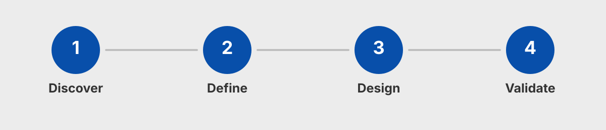
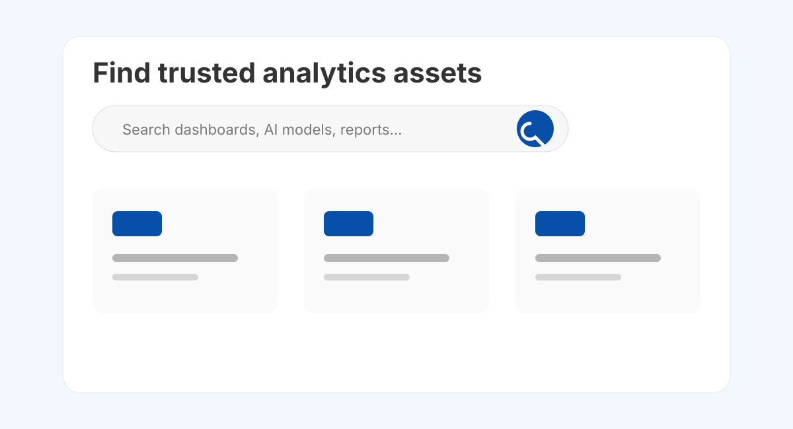
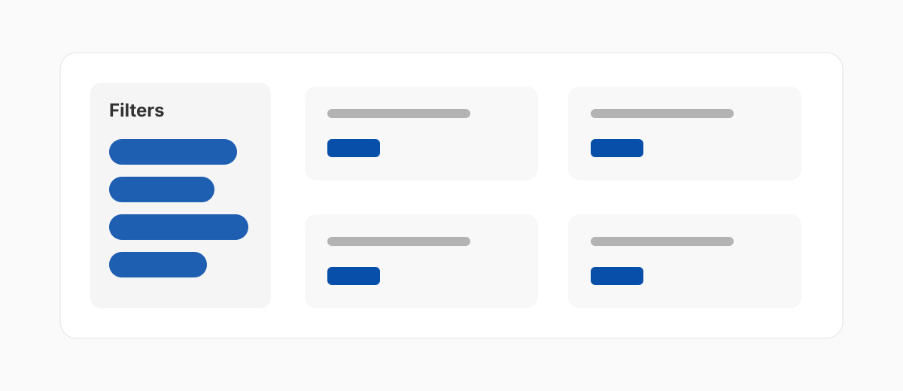
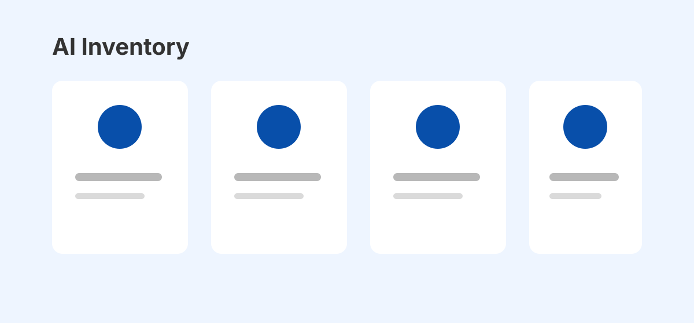

Make discovery the primary behavior.
Standardize fields across assets.
Surface certification and trust signals.
Create visibility into AI models.
Users needed to know who owned, supported, and maintained each asset.
Certification, status, and governance labels needed to be visible.
Favorites and related assets helped reduce duplicate work.


Help users understand which AI products were live, where they applied, and who owned them.
Surface intended use, known limitations, model type, and monitoring references.

Centralized marketplace for analytics assets.
Data sources and asset types considered for discovery.
Dedicated inventory for model visibility.
Governance translated into user-centered workflows.